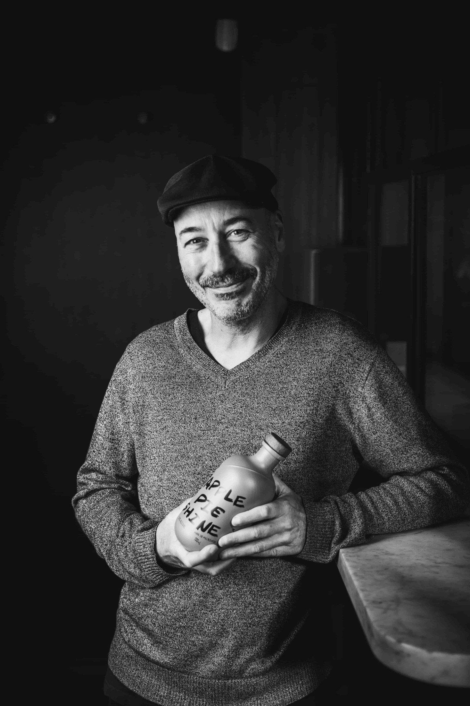

Welcome
You must be 18 years or older to enter this site.
By entering this site you confirm you are of legal drinking age in your country of residence. Pinto Spirits supports the responsible service and consumption of alcohol.
Our Story
The independent incubator building Australia's next great spirit brands.

The Founder
Paul Slater founded Pinto Spirits after 20 years in the Australian spirits industry — the last 12 spent in brand strategy, sales and marketing, helping develop several of Australia's leading spirits brands.
Before moving into brand strategy, Paul spent years working in hospitality, learning the industry from the floor up — what makes a venue tick, what makes a bartender reach for one bottle over another, and what actually earns a brand its place on the back bar. That early grounding, bar-side before brand-side, is still at the heart of how Pinto Spirits operates today.
Pinto Spirits is an independent incubator built around a simple idea: local, independent producers deserve the same platform, attention, and positioning as the world's great spirit brands. We work closely with the makers and distillers creating something genuinely exceptional — the ones with a brilliant product but not yet the strategic backing to match it.
Our focus is the on-trade: brand strategy, product education, and venue placement. In practice, that means shaping how a brand tells its story, training the people who pour it, and getting it in front of the right drinker, in the right venue, at the right moment.
It's a hands-on approach, built on real relationships rather than guesswork — the kind of intrinsic, ground-level knowledge of the Australian spirits landscape that comes only from having built a brand and worked the floor yourself. Paul also serves as a judge for the Australian International Spirits Awards, staying closely connected to the standards, trends, and producers shaping where the industry is headed.
For local, independent brands ready to earn their place among the greats, Pinto Spirits offers exactly that: strategy that's ambitious in vision and grounded in how this industry actually works.
"The best spirits don't find bartenders. Great representation does."
What We Do
We work with a deliberately curated portfolio — never so many brands that any one gets less than our full attention. Every producer we represent gets the same level of strategic focus, market knowledge, and personal advocacy that Paul has brought to every role in his career.
01
We know which venues matter, which buyers to talk to, and how to position your liquid for the right list — not just any list.
02
Staff training, tastings, and brand storytelling that turns bartenders into genuine advocates — the kind that still pour your spirit three years later.
03
From first listing to menu features and cocktail collaborations — we build presence in venues that shape what the broader market drinks next.